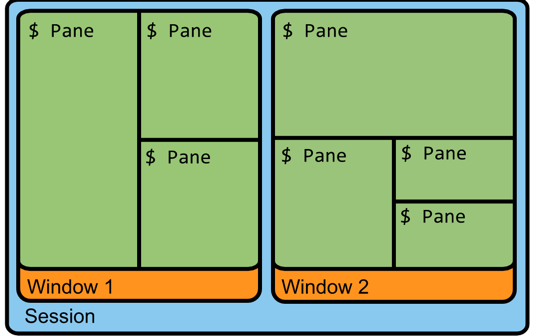

tmux
·
nanpangyou
Tumx 使用备忘
什么是tmux
Tmux 是一个终端复用器（terminal multiplexer）
Tmux 中有三个比较重要的概念 session, window , pane 在这里我们就把他们分别叫做会话，窗口，窗格
他们的关系大概就是这样

tmux的快捷键
进入tmux
只需要在终端输入tmux即可
退出tmux
按下Ctrl+d或者显式输入exit命令，就可以退出 Tmux 窗口
前缀键
Tmux 窗口有大量的快捷键。所有快捷键都要通过前缀键唤起。默认的前缀键是Ctrl+b，即先按下Ctrl+b，快捷键才会生效。
举例来说，帮助命令的快捷键是Ctrl+b ?。它的用法是，在 Tmux 窗口中，先按下Ctrl+b，再按下?，就会显示帮助信息。
会话管理
- 新建会话
第一个启动的 Tmux 窗口，编号是0，第二个窗口的编号是1,使用编号区分会话，不太直观，更好的方法是为会话起名。
tmux new -s <session-name>
- 分离会话
在 Tmux 窗口中，按下Ctrl+b d或者输入tmux detach命令，就会将当前会话与窗口分离。
tmux detach
执行命令后，tmux会退出当前窗口，但是会话进程会在后台继续运行
tmux ls可以查看当前所有的tmux会话
- 接入会话
tmux attach 用来重新接入某个已存在的会话
tmux attach